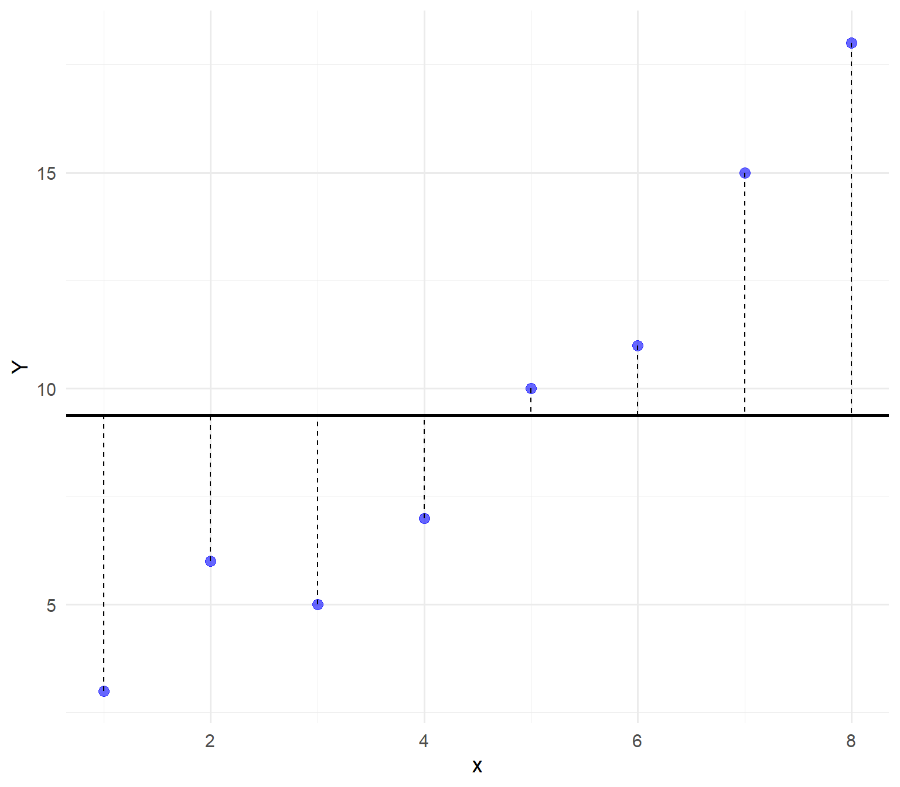
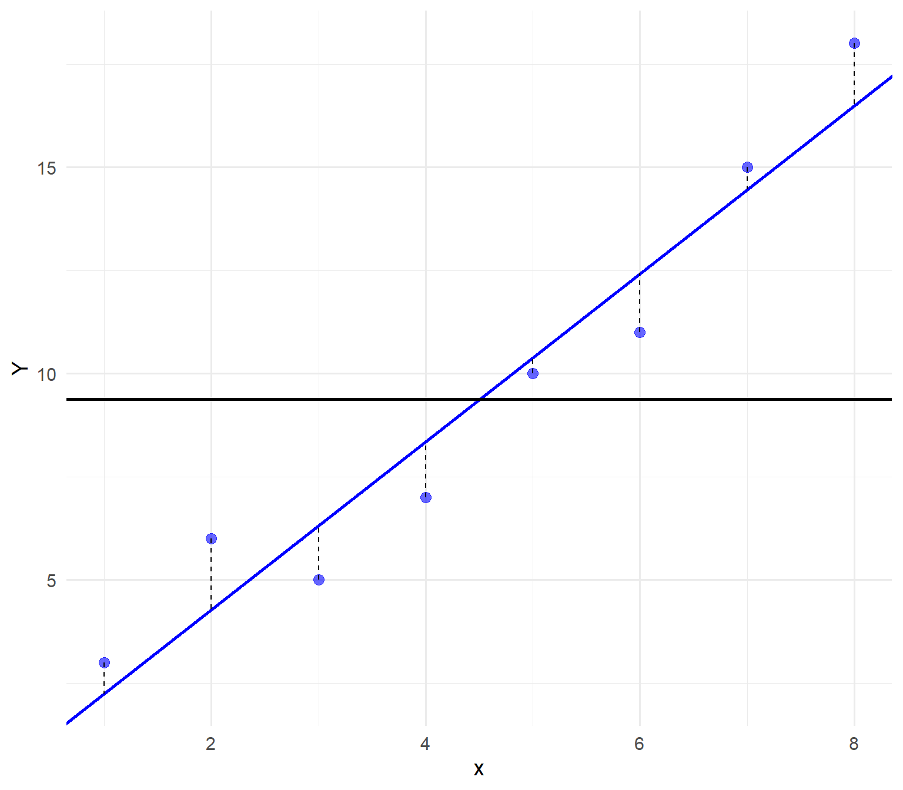

A way of predicting the value of one variable from another.
Regression equation
\[ Y_i = \beta_0 + \beta_iX_i + \epsilon_i \]
Example in R
A distributor of frozen desert pies wants to evaluate the effect of price to the demand of pie. Data are collected for 15 weeks.
Step 2: Estimate the model
## estimating linear regression
model <- lm(Pie_Sales ~ Price, data = df)
## printing model summary
summary(model)
Call:
lm(formula = Pie_Sales ~ Price, data = df)
Residuals:
Min 1Q Median 3Q Max
-90.040 -45.040 1.977 55.926 81.977
Coefficients:
Estimate Std. Error t value Pr(>|t|)
(Intercept) 558.28 90.44 6.173 3.36e-05 ***
Price -24.03 13.48 -1.783 0.0979 .
---
Signif. codes: 0 '***' 0.001 '**' 0.01 '*' 0.05 '.' 0.1 ' ' 1
Residual standard error: 59.09 on 13 degrees of freedom
Multiple R-squared: 0.1965, Adjusted R-squared: 0.1347
F-statistic: 3.179 on 1 and 13 DF, p-value: 0.09794Step 3: Interpret results
y-intercept (a): 558.28
slope (b): -24.03
estimates the average value of y changes by \(b_i\) units for each 1 unit increase in \(x_i\) holding other variables constant.
example: a 1 unit increase in price decreases the pie sales by 24.03 pies per week.
a linear regression with one or more independent variable (explanatory variable), and one dependent variable (response variable).
multiple regression model
\[ y = \beta_0 + \beta_1 x_1 + \beta_2 x_2 + ... + b_k x_k \]
Example in R
A distributor of frozen desert pies wants to evaluate the factors affecting the demand of pie. Data are collected for 15 weeks.
Step 1: import dataset
## import synthetic data
df <- tibble(
Week = 1:15,
Pie_Sales = c(350, 460, 350, 430, 350, 380, 430, 470, 450, 490, 340, 300, 440, 450, 300),
Price = c(5.50, 7.50, 8.00, 8.00, 6.80, 7.50, 4.50, 6.40, 7.00, 5.00, 7.20, 7.90, 5.90, 5.00, 7.00),
Advertising = c(3.3, 3.3, 3.0, 4.5, 3.0, 4.0, 3.0, 3.7, 3.5, 4.0, 3.5, 3.2, 4.0, 3.5, 2.7)
)
## print dataset
head(df)
# A tibble: 6 × 4
Week Pie_Sales Price Advertising
<int> <dbl> <dbl> <dbl>
1 1 350 5.5 3.3
2 2 460 7.5 3.3
3 3 350 8 3
4 4 430 8 4.5
5 5 350 6.8 3
6 6 380 7.5 4 Step 2: Create a scatter plot
Step 3: Estimate the model
## estimating linear regression
model <- lm(Pie_Sales ~ Price + Advertising, data = df)
## printing model summary
summary(model)
Call:
lm(formula = Pie_Sales ~ Price + Advertising, data = df)
Residuals:
Min 1Q Median 3Q Max
-63.795 -33.796 -9.088 17.175 96.155
Coefficients:
Estimate Std. Error t value Pr(>|t|)
(Intercept) 306.53 114.25 2.683 0.0199 *
Price -24.98 10.83 -2.306 0.0398 *
Advertising 74.13 25.97 2.855 0.0145 *
---
Signif. codes: 0 '***' 0.001 '**' 0.01 '*' 0.05 '.' 0.1 ' ' 1
Residual standard error: 47.46 on 12 degrees of freedom
Multiple R-squared: 0.5215, Adjusted R-squared: 0.4417
F-statistic: 6.539 on 2 and 12 DF, p-value: 0.01201Step 4: Interpret results
\(\beta_1\) (Price): -24.98
\(\beta_2\) (Advertising): 74.13
To determine the strength of the relationship between two categorical variables.
To predict the value of a dependent variable based on one or more independent variables
To compare the means of two or more groups.
To analyze the frequency of occurrences within categories.
The average value of the dependent variable.
The change in the dependent variable for a one-unit increase in the independent variable
The correlation between the two variables.
The predicted value of the dependent variable when the independent variable is zero.
Multiple linear regression uses only one independent variable.
Multiple linear regression uses two or more independent variables
Multiple linear regression analyzes categorical variables.
Multiple linear regression does not involve a dependent variable.
A measure of the strength of the linear relationship between the variables
The probability of making a correct prediction.
The difference between the observed and predicted values.
he slope of the regression line.
Take note!
Total sum of squares

Residuals sum of squares

R-squared (\(R^2\))
\[ R^2 = 1 - \frac{\text{SSR}}{SST} = \frac{\text{Sum of squares regression}}{\text{Total sum of squares}} \]
Adjusted R-squared (\(R^2\))
What is the effect of adding a new variable?
Adjusted R-squared (\(R^2\))
\[ R^2_{adj} = 1 - (1 - R^2)(\frac{n-1}{n-k-1}) \]
shows the proportion of variation in \(y\) explained by all \(x\) variables adjusted for the number of \(x\) variables used.
where excessive use of unimportant independent variables
smaller then \(R^2\)
useful in comparing among models
Calculate the \(R^2\) and adjusted \(R^2\)
\[ R^2 = 1- \frac{\text{SSR}}{SST} = \frac{\Sigma(y_i - \hat{y_i})^2}{\Sigma(y_i - \bar{y})^2} \]
## Estimating linear regression
model <- lm(Pie_Sales ~ Price + Advertising, data = df)
## Extract model predictions
y_pred <- predict(model)
y_actual <- df$Pie_Sales
## Compute SS_tot (Total Sum of Squares)
y_mean <- mean(y_actual)
SS_tot <- sum((y_actual - y_mean)^2)
## Compute SS_res (Residual Sum of Squares)
SS_res <- sum((y_actual - y_pred)^2)
## Compute R-squared manually
r_squared_manual <- 1 - (SS_res / SS_tot)Manual R-squared: 0.5214779 linear regression model relates the outcome to the predictors via a linear fashion.
departure from linearity can be checked by using a scatter plot and a line overlaid to the plots
if linearity is not satisfied, transformation may be needed
insert plot
Econ 149: Analytical and statistical packages 2